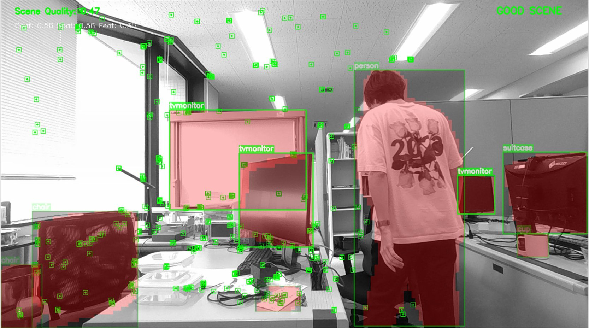
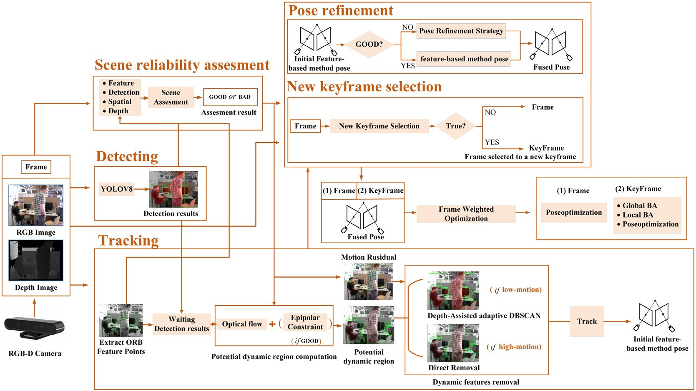
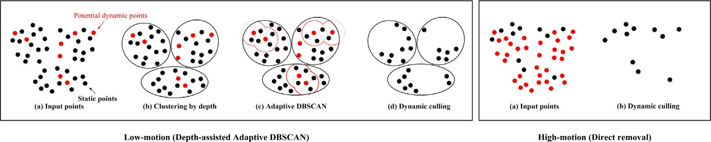
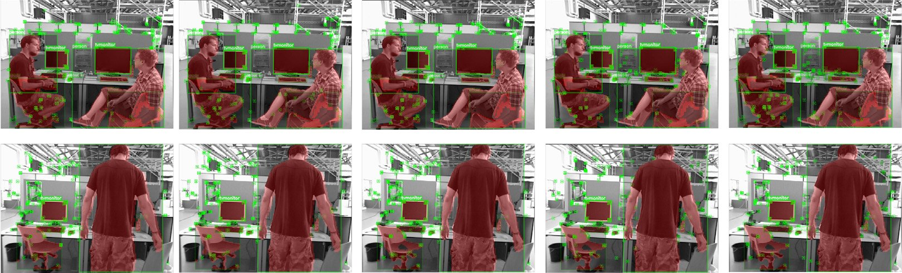
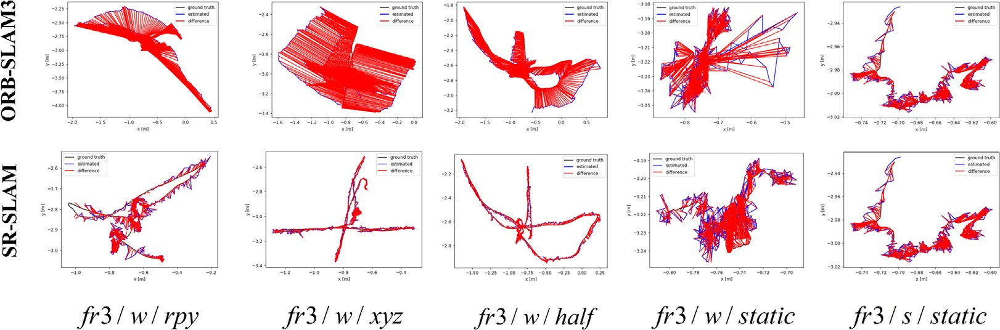
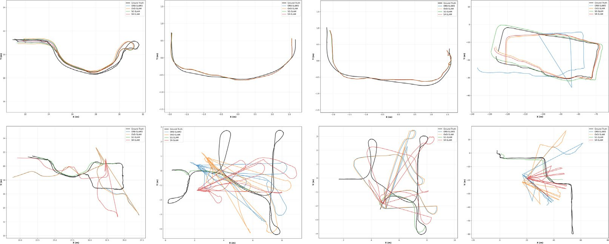
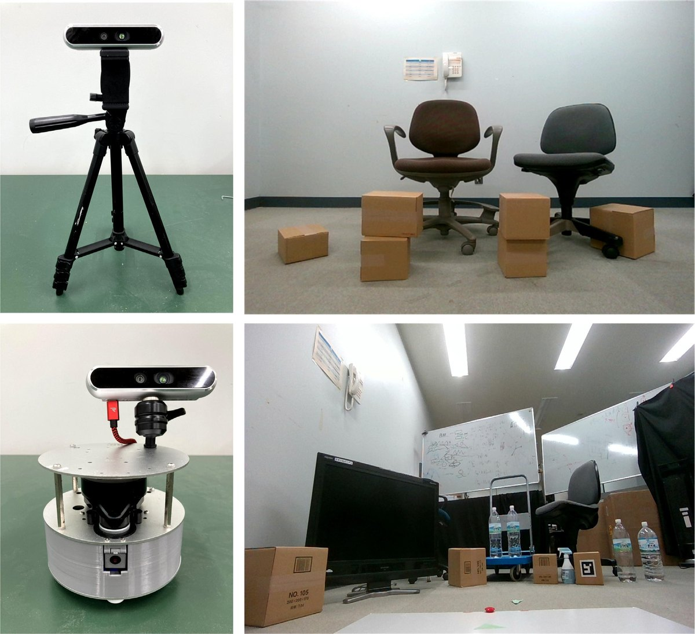

Journal Robotics and Autonomous Systems · 2026
SR-SLAM
Scene reliability-based RGB-D SLAM in diverse environments
1Japan Advanced Institute of Science and Technology 2Hanyang University *Corresponding author

01 · Abstract
How reliable is this scene for feature-based tracking?
In feature-based SLAM, the quantity and quality of extracted features drive performance, and both vary across environments. Current approaches face two challenges: limited adaptability in dynamic feature culling and pose estimation, and insufficient environmental awareness in assessment and optimization.
SR-SLAM is a scene reliability-based framework built on ORB-SLAM3. A unified scene reliability assessment combines several metrics with historical observations and guides the rest of the system: adaptive dynamic region selection with flexible geometric constraints, a depth-assisted self-adjusting clustering (adaptive DBSCAN) for dynamic feature removal, reliability-aware pose refinement that brings in a direct method when features are insufficient, and reliability-based keyframe selection with frame-weighted optimization.
On public datasets and in real-world scenarios, SR-SLAM improves accuracy by up to 90% over its ORB-SLAM3 baseline. It is not the most accurate method everywhere: the results explorer below shows each sequence, including those where a baseline wins.
02 · Video
SR-SLAM in four minutes
03 · Method
One reliability score guides the whole pipeline

- 1
Detection thread
SR-SLAM builds on ORB-SLAM3 and adds a YOLOv8 detection thread that runs alongside tracking.
- 2
Scene reliability
Each frame is scored from detection confidence, spatial distribution, feature quality and depth quality, weighted by its change from a reference frame.
- 3
Adaptive dynamic regions
Epipolar constraints are added only in GOOD (reliable) scenes; otherwise LK optical flow alone marks anomalous features.
- 4
Dynamic feature removal
Depth-assisted adaptive DBSCAN in low motion, direct removal in high motion.
- 5
Pose refinement
In BAD frames a direct method refines the pose, fused with the feature-based pose by a weight from the motion residual.
- 6
Keyframes and weighting
Reliability decides new keyframes and weights each frame in the optimization, instead of weighting single features.
04 · Dynamic culling
Remove the people, keep the features around them


05 · Results
Accuracy on TUM, BONN and OpenLORIS
Pick a benchmark, a metric and a sequence. On TUM, SR-SLAM is compared with its ORB-SLAM3 baseline and three ORB-SLAM3-based dynamic SLAM methods; on BONN and OpenLORIS with the dynamic SLAM systems the paper reports.


06 · Ablation and runtime
What each module adds, and what it costs
SR-SLAM runs at about 14 FPS, slower than ORB-SLAM3, OVD-SLAM and SG-SLAM; detection with geometric constraints is the main cost.
07 · Real world
Fixed camera and mobile robot, Intel RealSense D455
A fixed camera should not move, so any estimated motion is drift. Pick a scene and a drift measure (Table 13).

08 · Cite
Citation
@article{zhang2026srslam,
title = {{SR-SLAM}: Scene reliability-based {RGB-D} {SLAM} in diverse environments},
author = {Zhang, Haolan and Li, Chenghao and Canh, Thanh Nguyen and Wang, Lijun and Chong, Nak Young},
journal = {Robotics and Autonomous Systems},
volume = {197},
pages = {105306},
year = {2026},
doi = {10.1016/j.robot.2025.105306}
}